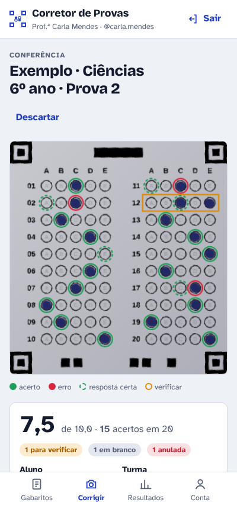
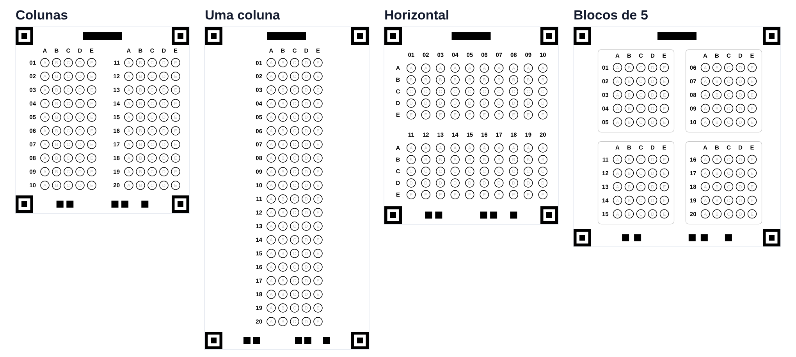
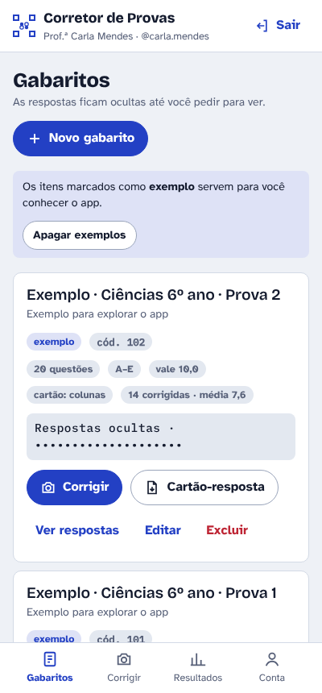
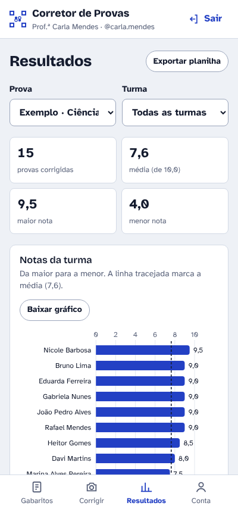
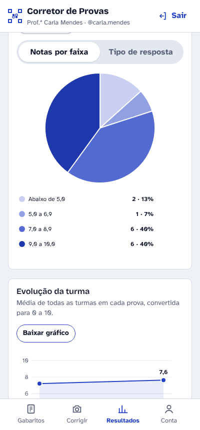

Corrija provas de múltipla escolha com a câmera do celular
Cadastre o gabarito, cole o cartão-resposta na sua prova do Word e fotografe as provas dos alunos. O app lê as marcações, dá a nota e monta os gráficos da turma.

Como funciona
Três passos, sem leitora óptica e sem folha especial.
Cadastre o gabarito
Digite as respostas certas (ou toque nas bolinhas), escolha de 1 a 100 questões e alternativas de A a D ou A a E.
Coloque o cartão na prova
Baixe o cartão-resposta como imagem para o Word, em qualquer canto da sua prova, ou use a folha A4 pronta.
Fotografe e pronto
O app encontra o cartão na foto, lê as marcações, mostra o que leu para você conferir e guarda a nota.
O cartão-resposta do seu jeito
Quatro formatos. Letras clarinhas dentro das bolinhas ajudam o aluno a marcar.

Tudo o que o professor precisa
- Leitura no próprio celular, mesmo com a foto de lado, torta ou com pouca luz
- Conferência antes de salvar: toque numa bolinha para corrigir a leitura
- Questões com duas marcas são anuladas automaticamente
- Provas corrigidas salvas com a imagem do cartão, para consultar depois
- Gráficos da turma: notas, distribuição, pizza e evolução entre provas
- Acertos por questão, para saber o que revisar em aula
- Planilha de notas para o diário (abre no Excel)
- Use no celular, no computador e no iPhone, com os mesmos dados
- Funciona sem internet e sincroniza quando a conexão volta
- Cores do app à sua escolha, modo claro e escuro



Os dados dos seus alunos ficam protegidos
Gabaritos, notas, nomes e imagens são criptografados no seu aparelho, com uma chave que só a sua senha abre, antes de qualquer envio. Nem quem mantém o app consegue ler. Se esquecer a senha, você volta a entrar com a sua chave de recuperação. Leia a Política de Privacidade.
Como instalar
É gratuito durante a fase de testes. Use sempre o mesmo usuário e senha em todos os aparelhos.
Android
- Abra este site no Chrome.
- Toque em Abrir o app.
- No menu ⋮, toque em Instalar app.
iPhone
- Abra este site no Safari.
- Toque em Abrir o app.
- Toque em Compartilhar e depois em Adicionar à Tela de Início.
Computador
- Abra este site no Chrome ou no Edge.
- Toque em Abrir o app e entre com sua conta.
- Se quiser, use o ícone de instalar na barra de endereços.
Perguntas frequentes
Preciso imprimir uma folha especial?
Não. O cartão-resposta é uma imagem que você cola na própria prova, em papel comum, impresso em qualquer impressora ou fotocopiado.
E se a leitura errar alguma questão?
O app mostra o cartão lido antes de salvar, destacando o que ficou em dúvida. Basta tocar na alternativa certa para corrigir. Se a foto não for reconhecida, você pode tocar nos 4 cantos do cartão.
Funciona sem internet?
Sim. A leitura acontece no próprio aparelho. Quando a internet volta, o app sincroniza com seus outros aparelhos.
Quanto custa?
Durante a fase de testes, é gratuito. Quem participar agora será avisado com antecedência sobre qualquer mudança.
Esqueci a senha. E agora?
Na tela de entrada, toque em Esqueci a senha e use a sua chave de recuperação. Por segurança, sem a senha e sem a chave ninguém consegue abrir os dados.